Fig. 1. CAD renderings of the tiller extension (left) and the mesh-sleeved joint (right).
Microrobotics · Dec 2025 · Micro and Nano Robotics · Cornell University
Electromagnetic Actuator for Snap-Through Haptics
LZ Corrales, Jeffrey Kagle
Snap-through buckling can deliver a fast, distinct indentation for wearable haptic feedback, but the beam needs an actuator that supplies 2.9 N over a 3.36 mm stroke to trigger the snap. With LZ Corrales, I designed a compact Lorentz-force solenoid with a permanent-magnet plunger, sized it with a magnetic-vector-potential force model, and integrated it with the beam in a 3D-printed housing. The integrated prototype delivers the impulse force and displacement needed to trigger snap-through, and the beam resets passively.
2.9 Nforce needed to trigger snap-through, over a 3.36 mm stroke
≈19 mmcustom solenoid stroke above the 2.9 N threshold
56.6 gtotal solenoid mass (30.5 mm long, 19.5 mm outer diameter)
0.5 Adrive current of the selected design
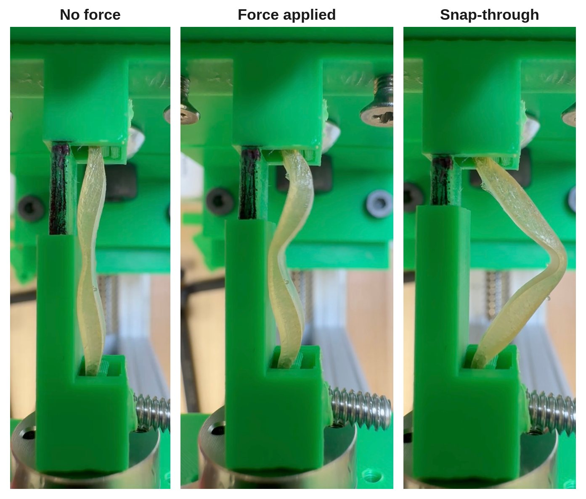
Fig. 1. The snap-through beam in the test setup: no force, force applied before the snap, and after snap-through.
Key results
An off-the-shelf solenoid (12 V, 0.25 A, 0.5 N) could not displace the beam, so we designed a custom solenoid with an N52 permanent-magnet plunger to raise force density without adding mass.
Swept current, magnet diameter, turns per layer, and layer count in a magnetic-vector-potential force model; the selected design uses 0.5 A, a 10 mm magnet, and 120 turns × 18 layers of 30 AWG wire (85.22 m).
Validated the model against a commercial solenoid on an ATI Nano force sensor: modeled and measured force maxima and minima closely aligned, with discrepancies only near the coil edge.
The custom solenoid stays above the 2.9 N threshold over ≈19 mm of stroke when only 3.36 mm is needed, leaving room to shrink it by matching the beam's force–displacement profile.
Housing iterations showed that placing the solenoid and beam in series, rather than in parallel, removes a bending moment that cut the force reaching the beam; 0.1 mm clearances made the 3D-printed parts fit reliably.
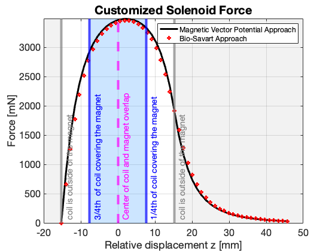
Fig. 2. Force–displacement profile of the custom solenoid; the shaded band is the usable stroke above the required force.
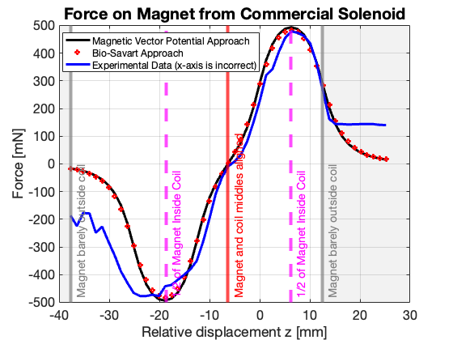
Fig. 3. Model validation: magnetic-vector-potential and Biot–Savart predictions against measured force from a commercial solenoid.
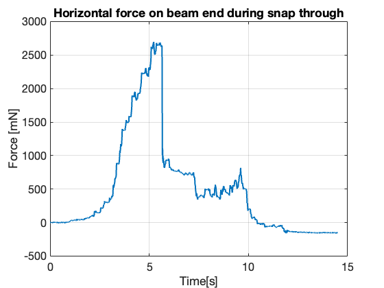
Fig. 4. Horizontal force on the beam end during snap-through; the drop near 5.5 s is the snap.
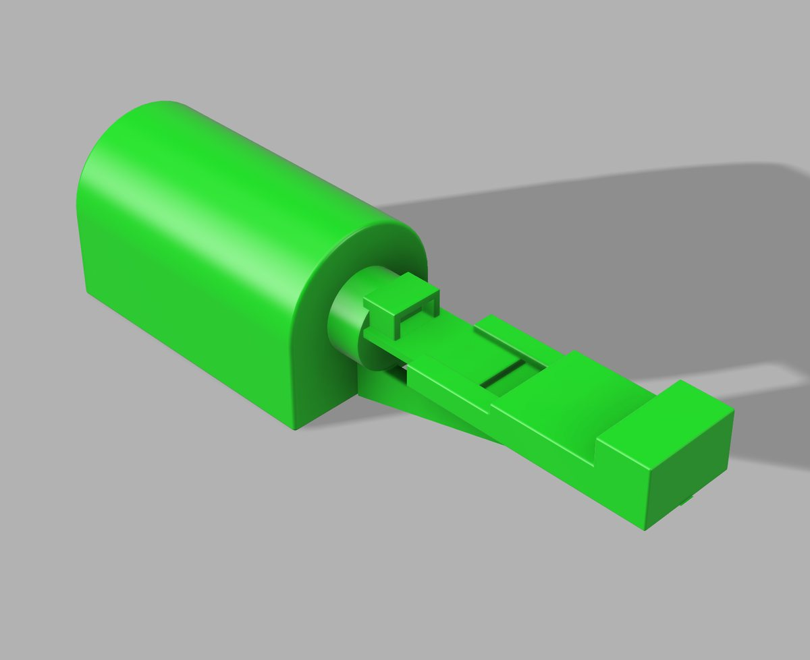
Fig. 5. Final 3D-printed housing holding the solenoid and beam in series.
Haptics · Dec 2025 · MAE 6800 Haptics · Cornell University
The Gait Coach: Haptic Cues for Gait Pacing
Jeffrey A. Kagle, EV Morisseau, Daniel Garcia
Haptic cues are increasingly used in gait rehabilitation, but few studies compare feedback types head-to-head on both walking performance and user experience. With Daniel Garcia and EV Morisseau, I built The Gait Coach, a wearable that delivers vibrotactile, skin-stretch, poke, or auditory cues at 120 steps per minute while an IMU on the foot measures how quickly the wearer locks onto that pace. In a three-participant study, vibrotactile feedback came closest to the auditory control, while audio remained the most comfortable.
p = 0.604vibrotactile vs. audio time-to-match (Welch's t-test), closest to the control
4feedback types: vibrotactile, skin stretch, poke, and audio
120 SPMmetronomic pacing target, detected with a foot-mounted IMU
12randomized 30 m walking trials per participant
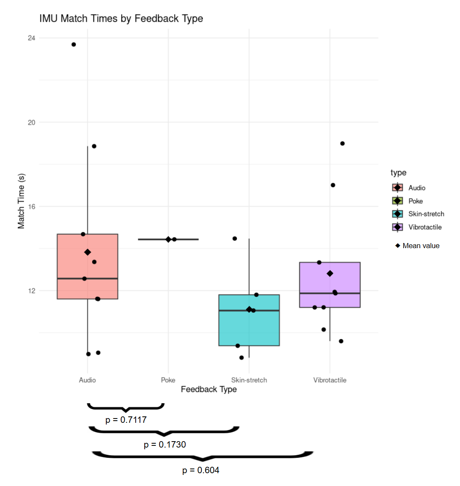
Fig. 1. Time to match the 120 SPM cue by feedback type, with Welch's t-test p-values against the audio control (diamonds are means).
Key results
Vibrotactile cues matched the audio control most closely: Welch's t-tests on time-to-match gave p = 0.604 for vibrotactile versus audio, compared with p = 0.1730 for skin stretch.
Participants rated audio highest for comfort, perceptibility, and self-scored matching, with vibrotactile a close second; skin stretch ranked lowest and, with poke, was called the most confusing.
Built the wearable around a Hapkit board: an ERM motor, a solenoid poke, a DC-motor skin-stretch end effector, and headphones, with custom 3D-printed housings for each actuator.
Wrote a heel-strike detector for the foot IMU (acceleration-magnitude threshold with a refractory period) that times how long a walker takes to hold the target cadence for 6 consecutive seconds.
Poke testing was cut short when the solenoid's power draw disrupted the microcontroller, leaving one data point; a separate 12 V supply, sturdier connections, and better data logging are the identified fixes.
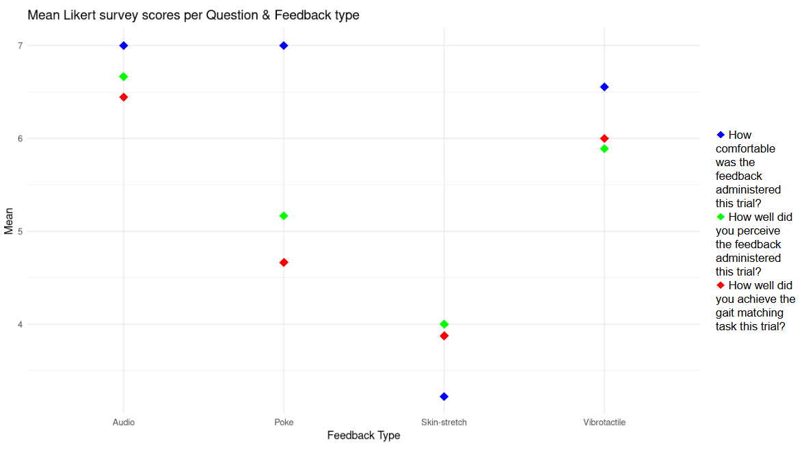
Fig. 2. Mean Likert scores for comfort, perception, and self-rated matching by feedback type.
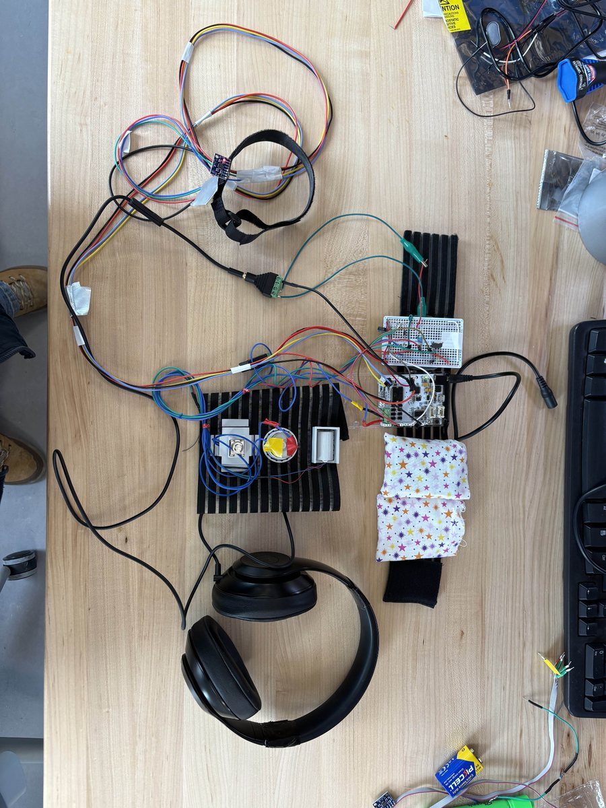
Fig. 3. Final assembly: IMU strap, forearm haptic band, upper-arm electronics band, and headphones.
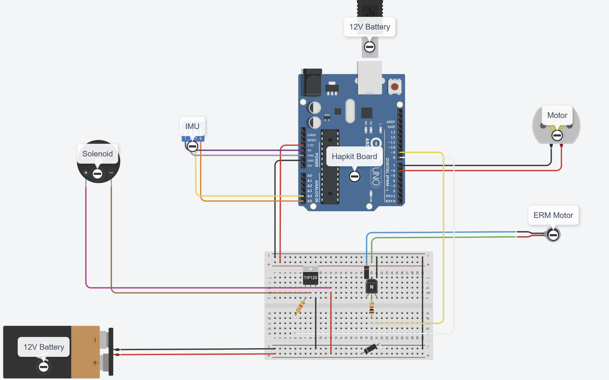
Fig. 4. Circuit diagram: Hapkit board driving the ERM motor, solenoid, and DC motor, with the IMU.
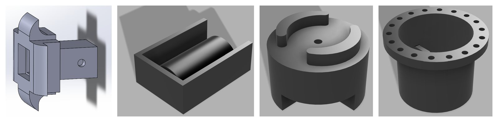
Fig. 5. Custom 3D-printed housings for the solenoid, ERM motor, skin-stretch end effector, and DC motor.
Product Design · Dec 2025 · MAE 5340 Innovative Product Design · Cornell University
Focus Glasses
Isabela Castillo, Rene Umeh, Swar Sahgal, Jeffrey Kagle, Robert Bridges
Students struggle to stay focused through long lectures, and neither productivity apps nor current smart glasses solve it. Our team, STEN Labs, designed Focus Glasses: ordinary-looking eyewear with low-intensity 40 Hz LED flicker built into the temple arms, based on research linking 40 Hz stimulation to sustained attention. The specification covers user research, TRIZ-driven design, thermal and structural checks, conjoint-based pricing, and a five-year market forecast.
40 Hzinvisible spectral LED flicker built into the temple arms
3.3–5.5 °CLED temperature rise above ambient at ~22 mW per LED
≈200 kPatemple stress from a 10 N press, vs. ~40 MPa ABS yield
$15.54Mfive-year NPV from a Bass diffusion forecast
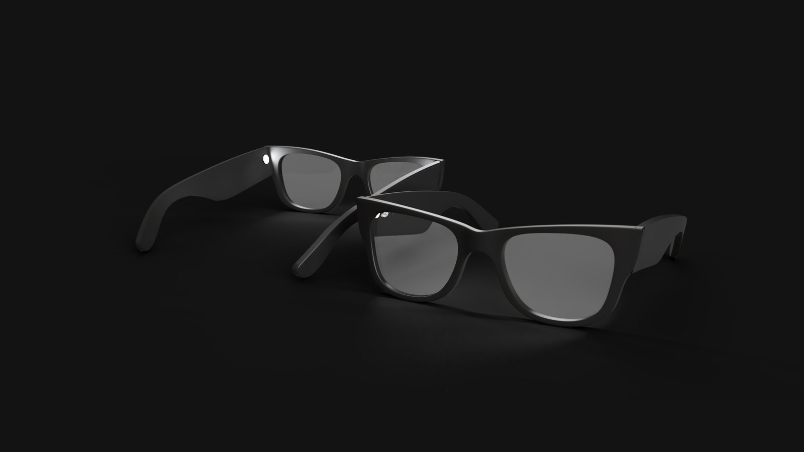
Fig. 1. Renders of the Focus Glasses.
Key results
Grounded the concept in 50 immersion, observation, and interview sessions with Cornell students; an AHP ranking put academic achievement and focus as the most critical problem areas.
Designed the electronics around RGB LEDs driven by an ATtiny202 on a custom PCB in the temple arm, powered by a 3 V CR1220 cell, with TRIZ principles guiding LED placement, diffusion, and thermal management.
Thermal check: each LED dissipates about 22 mW, raising temperature only 3.3–5.5 °C above ambient, which is not a safety concern for skin contact.
Structural check: a 10 N press on the ~50 mm² temple produces about 200 kPa, orders of magnitude below the ~40 MPa yield strength of ABS.
Business case: value-based pricing of $59–$79 against a ~$50 early unit cost with injection-molded frames, and a Bass-model forecast over a 500,000-user market giving an NPV of $15,543,276.
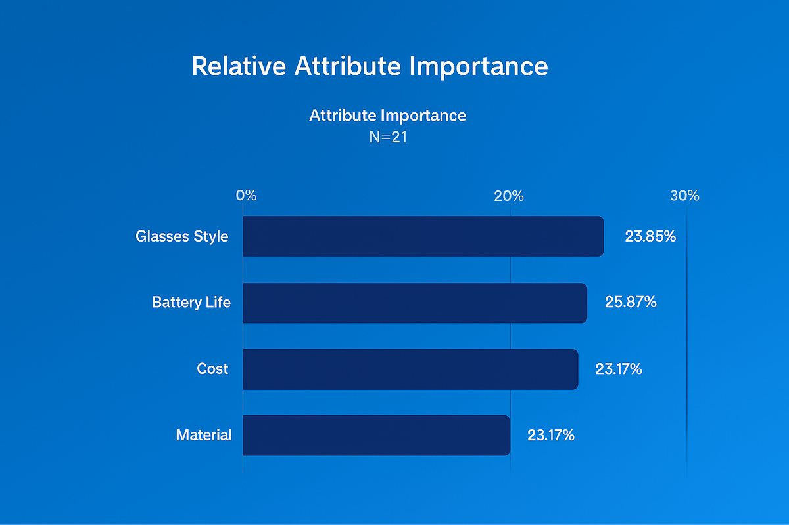
Fig. 2. Choice-based conjoint results: relative importance of glasses style, battery life, cost, and material.
Fig. 4. Circuit schematic: ATtiny202 driving the RGB LED channels from a 3 V coin cell.
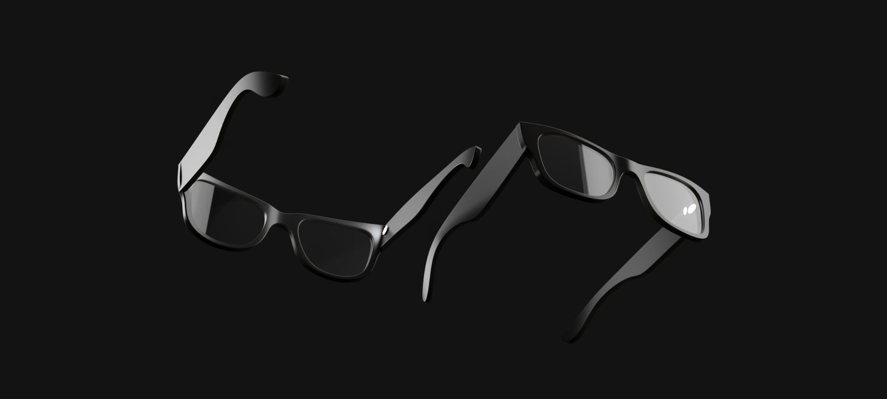
Fig. 5. Additional product renders.
Soft Robotics · May 2025 · Senior Project · Case Western Reserve University · Advisor: Prof. Chase Cao
Liquid Dielectric Elastomer Actuator Motor for Underwater Propulsion
Jeffrey Kagle, Katharine Lobas, Jarod Lau, Yi Jin, Chase Cao
Rigid motors and hydraulics struggle under deep-water pressure and tend to be bulky and inefficient, while conventional dielectric elastomer actuators deliver high force but little displacement. We designed a deformable rotary motor driven by liquid dielectric elastomer actuators (Peano-HASELs), selected the concept through weighted trade studies, and built custom quarter-circle actuators and a 3D-printed motor housing as a proof of concept.
4liquid Peano-HASEL actuators pulling in sequence on one rotor
20 cmmotor diameter, 3D-printed frame on two ball bearings
5–9 kVdrive voltages tested; actuators deformed without damage
3.1trade-study score for rotary motion (flapping 2.45, jetting 2.2)
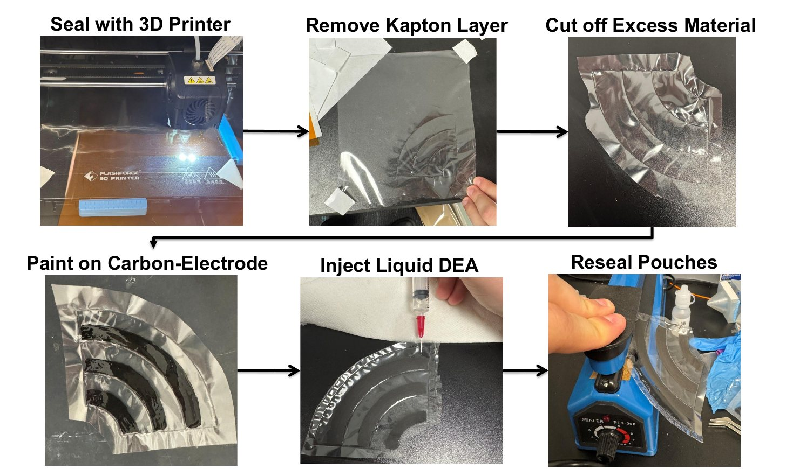
Fig. 1. Actuator fabrication: heat-seal BOPP film with a 3D printer, remove the Kapton layer, trim, paint carbon electrodes, inject the liquid dielectric, and reseal the pouches.
Key results
Weighted trade studies selected liquid DEAs as the actuation method (score 2.9, ahead of solid DEAs at 2.7, motors at 2.6, and hydraulics at 2.0) and rotary motion as the movement method (3.1 vs. 2.45 for flapping and 2.2 for jetting).
Designed a three-pouch, quarter-circle Peano-HASEL actuator with painted carbon electrodes so four units fit around a circular frame and pull on an eccentric central rotor.
Developed the fabrication process: heat-sealing BOPP film with a 3D printer, painting carbon electrodes, injecting silicone oil as the liquid dielectric, and resealing the pouches.
Fabricated actuators deformed at 5, 8, and 9 kV from an off-board high-voltage DC/DC converter without damage; testing was limited to verifying functionality.
Identified the main manufacturing fixes for future builds: thicker seal lines in the printer path to prevent leaks, better-placed injection points, and fewer air bubbles in the pouches.
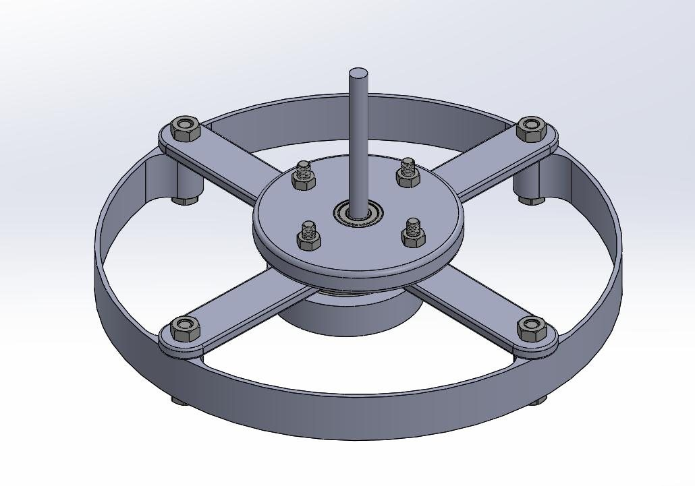
Fig. 2. Full CAD assembly: 3D-printed frame, support struts, and central hub with shaft on two ball bearings.
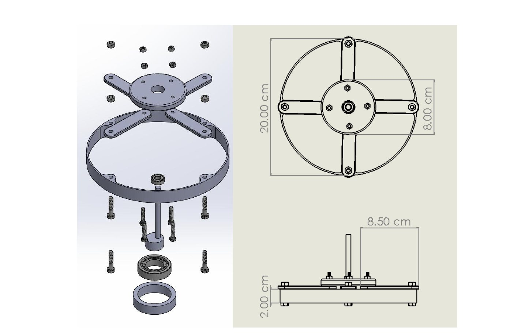
Fig. 3. Exploded view and dimensioned drawing of the 20 cm motor.
Fig. 5. Concepts compared in the trade studies: bioinspired flapping propulsion, liquid DEA rotor, and liquid–solid DEA hybrid.
Mechanical Design · Dec 2024 · EMAE 360 · Case Western Reserve University · Project Manager
TR315-r Inline-3 Motorcycle Engine
Nathaniel Berntson, Jeffrey Kagle, Joshua Berman, Josue Cervantes, Sebastian Kennedy, Gregory Burns, Diego A. Acosta-Félix, Alexander Schreiter, Ben Stites, Kenji Miyake
A semester-long design of the TR315-r, a 1502 cc inline-3 engine for cruiser motorcycles, by a 10-person team. As project manager I coordinated the schedule and deliverables, focused on the fluid mechanics and thermodynamics behind engine cooling, and contributed to every section. The final specification covers the engine design, noise and emissions compliance, manufacturing, and a three-year business case.
77.83 dBat 50 ft at 8000 rpm redline, under the strictest US limit (80 dBA)
97%emissions reduction needed at cruise, met with a catalytic converter
14.9%projected ROI over the first three years of production
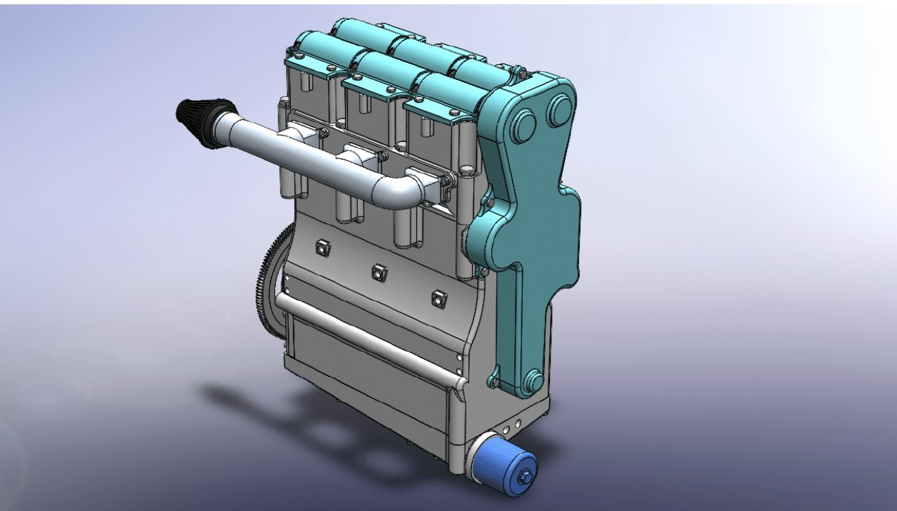
Fig. 1. CAD model of the TR315-r inline-3 engine.
Key results
Cooling: chose water cooling after finding that air cooling would need an excessive amount of fin area; water cooling takes less space and moves more heat. Set a 120 °C maximum engine surface temperature, well below the ~200 °C at which ABS shrouding begins to melt.
Noise: computed exhaust sound intensity from exhaust pressure, density, and speed of sound, then applied the inverse-square law. With a muffler (~35 dB reduction) the engine reaches 72.93 dB at 5000 rpm and 77.83 dB at redline, measured 50 ft away — within Washington's 80 dBA limit, the strictest in the US.
Emissions: initial output needed a 97% reduction at cruise; a 400-cell metallic catalytic converter brings HC + NOx below 0.8 g/km and CO below 6.4 g/km, meeting CARB and EPA limits.
Final layout: over-square inline-3 (88.9 mm bore, 76.2 mm stroke, ratio 1.1667) with a pent-roof head, port injection, and wet-sump lubrication — 280.87 lb in a 20.32 × 14.50 × 12.75 in envelope.
Business case: $3,277.17 production cost per engine at 15,000 units a year; a $4,099.95 sale price gives a 23.4% gross margin and 14.9% ROI over three years on a $17.55 million initial investment.
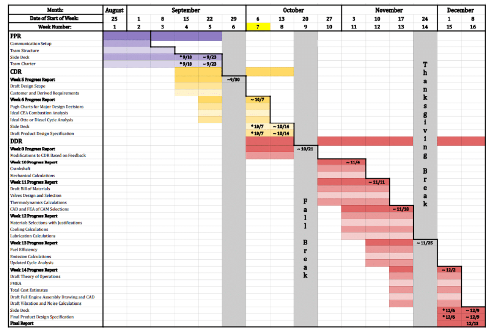
Fig. 2. Semester schedule I managed as project manager: deliverables, presentation and submission dates, and the critical path.
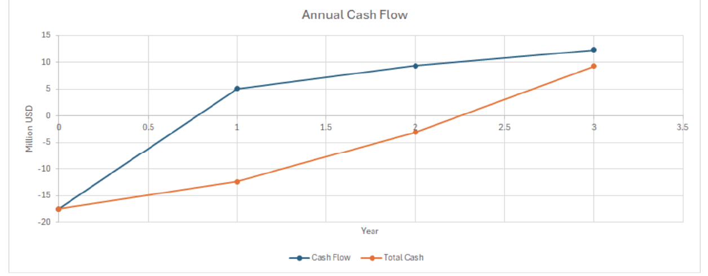
Fig. 3. Projected annual cash flow and total cash over the first three years of production.
Biomechanics · Theory · Dec 2024 · EMAE 415 Biomechanics · Case Western Reserve University · presented December 2024
Biological and Robotic Synthesized Cuttlefish Fin Biomechanical Model
Jeffrey Kagle
Cuttlefish swim by passing a sinusoidal wave along muscular-hydrostat fins, but no experimental study had measured or modeled the thrust these fins produce for forward swimming. This theory and literature-review project synthesized biological fin mechanics (anatomy, EMG activation, and force–strain models) with a robotic sinusoidal-fin model into one hybrid force model, creating a benchmark for comparing cuttlefish and designing soft biomimetic robots.
3Dfin force model: dorsoventral, lateromedial, and posteroanterior
2fin beating modes captured: gentle (aerobic) and vigorous (anaerobic)
11biological and robotic studies synthesized into one benchmark
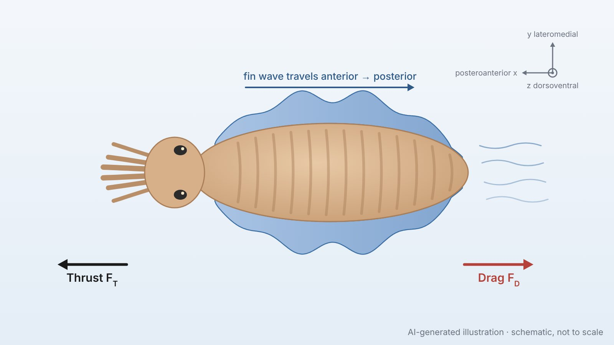
Fig. 1. AI-generated illustration (not from the paper): dorsal view of a cuttlefish with the fin wave travelling anterior to posterior, the resulting thrust and drag, and the body axes used in the model. Schematic, not to scale.
Key contributions
Built a hybrid thrust model by equating the robotic sinusoidal-fin equations of Su et al. with the biological fin-force model of Johnsen and Kier, filling the gap left by the lack of measured fin thrust data for cuttlefish.
Linked fin physiology to propulsion: muscles fire in a sinusoidal activation wave, gentle beating uses only the aerobic transverse muscle, and vigorous beating recruits all three muscle groups for higher force.
Included elastic energy stored and recovered by the muscular-hydrostat fin, and estimated energy output from work (E = F·d) since no intake-versus-output data exist for fin propulsion alone.
Proposed validation experiments: a soft biomimetic cuttlefish robot in a flow tank with force transducers, PIV, and strain gauges, and a live-animal flow-tank test to measure fin thrust using Newton's second law.
The hybrid thrust model
No study has measured the thrust of a live cuttlefish fin, so the model borrows it from robotics. Assuming a robotic sinusoidal fin (Su et al., 2022) with the same size and shape as the cuttlefish fin, the robot's thrust and drag equations stand in for the animal's, while the biological model (Johnsen & Kier, 1993) supplies the out-of-plane fin forces.
1. Net force from motion. Over a short time segment Δt, the change in swimming velocity u gives the acceleration, and Newton's second law gives thrust minus drag, where m is the cuttlefish's wet mass:
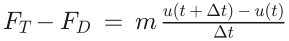
2. Drag at a point velocity. From the robotic model, drag is the viscous shear (fluid viscosity μ) integrated over the fin surface S:
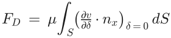
3. Point thrust. Combining the two isolates thrust, which must also equal the pressure p the beating fin exerts on the water in the swimming direction:
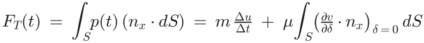
4. Fin forces from the animal. The biological model gives the dorsoventral and lateromedial fin forces from tissue tension: Tc is the tension in the crossed connective-tissue fibres at angle θ, Tdv the dorsoventral muscle tension, Atm and stm the transverse-muscle area and stress, and each element follows T = EAε:
5. Combined. Together these give a three-dimensional fin force in the posteroanterior, lateromedial, and dorsoventral directions: